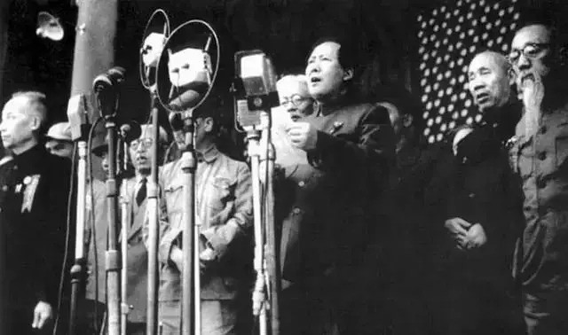

辛丑年 牛丁酉月 壬午日
贰零贰壹年拾月壹日
| 一 | 二 | 三 | 四 | 五 | 六 | 日 |
| 27 | 28 | 29 | 30 | 1 | 2 | 3 |
| 4 | 5 | 6 | 4 | 8 | 9 | 10 |
| 11 | 12 | 13 | 14 | 15 | 16 | 17 |
| 18 | 19 | 20 | 21 | 22 | 23 | 24 |
| 25 | 26 | 27 | 28 | 29 | 30 | 31 |
| 1 | 2 | 3 | 4 | 5 | 6 | 7 |
毛泽东同志是伟大的马克思主义者，伟大的无产阶级革命家、战略家、理论家，是马克思主义中国化的伟大开拓者，是近代以来中国伟大的爱国者和民族英雄，是党的第一代中央领导集体的核心，是领导中国人民彻底改变自己命运和国家面貌的一代伟人。
1936年-1976年任中国共产党中央军事委员会主席，1943年-1945年任中国共产党中央政治局主席，1945年-1976年任中央委员会主席，1949年-1954年任中华人民共和国中央人民政府主席，1954年-1959年任中华人民共和国主席。
1911年辛亥革命爆发后，毛泽东加入湖南起义新军。1913年-1918年在湖南第一师范学校学习。1919年在长沙创办《湘江评论》。1920年发起组织新民学会和俄罗斯研究会，积极宣传马克思主义。同年在湖南创建共产主义组织。1921年7月，出席中国共产党第一次全国代表大会。后任中共湘区委员会书记，中国劳动组合书记部湖南分部主任和湖南省工团联合会总干事，领导长沙、安源等地的工人运动。
1923年6月，出席中共三大，当选为中央执行委员，参加中央领导工作。1924年参与中共帮助孙中山改组国民党的活动。在国民党一大、二大上当选为中央候补执行委员，任宣传部代理部长。1926年主办第六届广州农民运动讲习所。11月到上海担任中共中央农民运动委员会书记。1927年到武汉任全国农民协会总干事，主持中央农民运动讲习所。在此期间先后发表《中国社会各阶级的分析》和《湖南农民运动考察报告》，明确提出无产阶级领导权和依靠农民同盟进行革命的主张，批评了陈独秀的右倾投降主义，标志着毛泽东思想的萌芽。
1928年4月，率部与朱德、陈毅率领的南昌起义余部会师后，组成中国工农红军第四军，任党代表。5月，在中共湘赣边界第一次代表大会上当选为特委书记，后任中共第四军前敌委员会书记。6月，在中共六大上被选为中央委员。在此期间的革命实践中，先后写了《中国的红色政权为什么能够存在》、《井冈山的斗争》、《星星之火，可以燎原》等著作，创造性地提出了农村包围城市，武装夺取政权的战略思想，开辟了一条具有中国特色的新民主主义革命取得胜利的惟一正确道路，标志着毛泽东思想开始形成。
1935年1月，长征途中，在贵州遵义召开中共中央政治局扩大会议，确立了毛泽东的领导地位。1935年12月，针对日本帝国主义加紧侵华造成的危机，毛泽东在瓦窑堡会议后作《论反对日本帝国主义策略》的报告，阐明建立抗日民族统一战线的理论和政策。1936年任中央军事委员会主席，担任这一职务直至逝世。为了迎接抗日战争，提高干部水平，克服教条主义，1937年写了《实践论》、《矛盾论》哲学著作，丰富和发展了马克思主义的认识论和辩证法。
毛泽东思想作为马克思主义在中国的发展，是中国共产党的指导思想，是中国人民宝贵的精神财富。其主要著作收入《毛泽东选集》，其他已公开发行的著作有《毛泽东书信选集》、《毛泽东农村调查文集》、《毛泽东新闻工作文选》和《毛泽东诗词选》等。
毛泽东有三子二女。长子在朝鲜战争中牺牲。